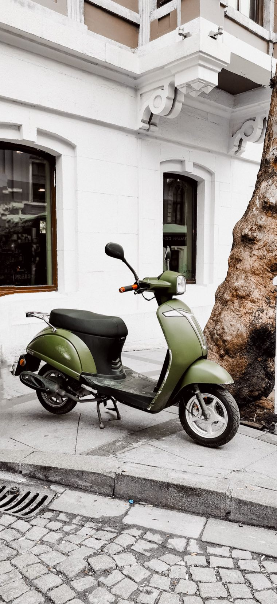

“50cc, no licence needed” in a listing title is not proof. In Vietnam, scooters that look the same can have different engine sizes, and old plastics or stickers guarantee nothing. Before any money changes hands, you need to confirm the data in the registration, not a nice-looking model.
For a petrol xe gắn máy the key threshold is an engine capacity of up to and including 50 cm³. Papers often show 49.5cc — that is a normal variant of the same category. But a “50” in the listing title or on the side panel proves nothing.
Licence, age, insurance and traffic rules always depend on the current national requirements and your own situation. So check the current rules before riding; when buying, our task is simpler — not to buy a bike with a different engine size passed off as 50cc.

Honda Cub, Vespa-style, SYM, Kymco or a no-name “retro scooter” can exist in several versions. The seller may have picked the wrong category on the site, used another model's name or simply not know. No need to argue — just ask for a photo of the papers and move on to the next bike if there isn't one.
Simply ask for a photo of the cà vẹt — the Vietnamese registration card. The photo should clearly show:
No interrogation is needed and you don't have to ask for every number up front. First confirm it is the right category, then ask for a live video: start-up, a short ride, lights and close-ups of the bike.
No. A photo of the registration is the simplest first filter. If it can't be sent now, it's too early to talk money.
A story like this means you can't rely on the listing alone. Before buying you need to understand what matches the registration and what exactly is being sold. If the explanations are confusing, better skip it.
For a tourist and for resale this is almost always a false saving. Such a bike is harder to buy safely, check, sell and explain to the next buyer.
If even one basic point raises doubt, don't look for excuses for the listing. There are plenty of bikes on the market — the next one will be easier and safer.
We don't list a bike just because it looks good. Before selling, we pick suitable 50cc bikes, check the papers and the real condition, then do basic preparation. So a buyer in Nha Trang sees a bike that has already been screened, instead of trying to decode a listing in Vietnamese.
How we buy our bikes — in how to buy a bike online. A full inspection before a deal — in “How to check a bike and its papers before buying”.